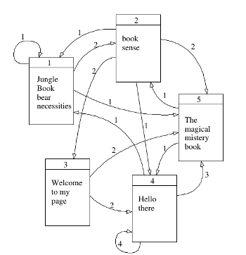
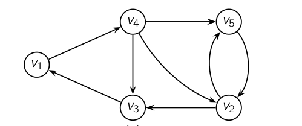
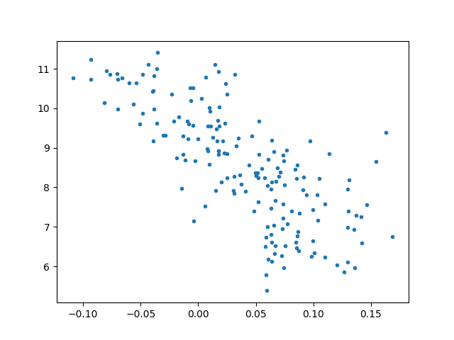

Google Nasıl İşler?
Lineer Cebir hocaları Google'a müteşekkir olmalı, çünkü bu ünlü arama motorunun kullandığı PageRank tekniğinin özü aslında lineer cebirin temelini oluşturan kavramlardan özdeğer / özvektör hesabı. Öğrenciler "niye bu kavramları öğreniyoruz hocam?" diye sorunca artık cevap kolay: "bu yöntemi Google da kullanıyor!".
Şimdi arama motorunun yapması gerekenleri düşünelim: Google'a bir kelime yazdığımızda geri gelen sonuçlar nasıl kararlaştırılır? İlk akla gelen yöntem tabii ki Web'deki tüm sayfaların (milyarlarca sayfa) sayfalar üzerindeki kelimelerin o sayfa ile ilişkilendirilmesi ve arama yapılınca kelimeye göre sayfa geri getirilmesi. Mesela alttaki örnekte "book (kitap)" yazınca geriye 1., 2. ve 5. sayfalar geri gelecek. Fakat hangi sırada? Bu sayfalardan hangisi diğerlerinden daha önemli?

PageRank'in temelinde daha fazla referans edilen sayfaların daha üstte çıkması yatar. Hatta o referans eden sayfaların kendilerine daha fazla referans var ise bu etki ta en sondaki sayfaya kadar yansıtılır, hatta bu zincir baştan sona her seviyede hesaplanabilir. Peki bu nasıl gerçekleştirilir?
PageRank Web sayfalarını bir Markov Zinciri olarak görür. Markov Zincirleri seri halindeki $X_n, n=0,1,2,..$ rasgele değişkenini modeller ve bu değişkenler belli sayıdaki konumların birinde olabilirler. Mesela konumları bir doğal sayı ile ilintilendirirsek $X_n = i$ olabilir ki $i={0,1,..}$ diye kabul edelim.
İlerlemeden önce Markov Zincirleri konusuna bakmak [1,6] iyi olur.
Şimdi en baştaki Web sayfalarına ait geçişleri yazalım,
P = [[1./4, 2./4, 0, 0, 1./4],
[1./6, 0, 2./6, 1./6, 2./6],
[0, 0, 0, 2./4, 2./4],
[1./8, 0, 0, 4./8, 3./8],
[0, 1./2, 0, 1./2, 0]]
P = np.array(P)
print P
[[ 0.25 0.5 0. 0. 0.25 ]
[ 0.16666667 0. 0.33333333 0.16666667 0.33333333]
[ 0. 0. 0. 0.5 0.5 ]
[ 0.125 0. 0. 0.5 0.375 ]
[ 0. 0.5 0. 0.5 0. ]]
Şimdi üst metotu kullanarak durağan dağılımı hesaplayalım. Herhangi bir başlangıç vektörünü $P$ ile 20 kere çarpmak yeterli olur.
import numpy.linalg as lin
x=np.array([.5, .3, .1, .1, 0]) # herhangi bir vektor
for i in range(20):
x = np.dot(x,P)
print 'pi = ', x
pi = [ 0.10526316 0.18421053 0.06140351 0.38596491 0.2631579 ]
Not: Aslında cebirsel olarak $P$'yi 20 kere kendisiyle çarpmak ve sonucu başlangıç vektörü ile bir kere çarpmak ta düşünülebilirdi. Fakat 20 kere vektör / matris çarpımları yapmak, 20 kere matris / matris çarpımı yapmaktan daha verimli olacaktır. Büyük Veri ortamı için de bu söylenebilir.
Neyse, eğer özvektör hesabını kendimiz elle yapmak yerine direk kütüphane çağrısı kullansaydık,
import numpy.linalg as lin
evals,evec = lin.eig(P.T)
pi = evec[:,0] / np.sum(evec[:,0])
print np.abs(pi)
[ 0.10526316 0.18421053 0.06140351 0.38596491 0.26315789]
Aynı sonuca ulaştık. Bu sonuç gösteriyor ki "book" yazdığızda Google bize 5. sayfayı en başta olacak şekilde sonuç döndürmeli, çünkü onun durağan dağılımı 1,2,5 sayfalarının arasında en yüksek.
Durağan Dağılıma Bakış
MZ ve durağan dağılımın PageRank'le alakasını bir daha düşünelim. MZ ile $n$ adım sonrasını hesaplayabiliyoruz, durağan dağılım ise sonsuz adım sonrasını ifade ediyor. Ve bu dağılım, bir anlamda, sonsuz yapılan adımlar sırasında en fazla hangi konumlarda zaman geçirileceğini gösteriyor. Konum yerine sayfa dersek durağan dağılımın niye en önemli sayfaları belirlemek için önemli olduğunu anlarız.
Kullanıcı herhangi bir sayfada iken hangi diğer sayfalara gideceği o sayfa üzerinde bağlantılar üzerinden anlaşılır, PageRank bu bağlantının mevcudiyetine bakar sadece, o mevcudiyet üzerinden bir geçiş olasılığı hesaplar, ve bu olasılığa göre (raslantısal şekilde) bağlantının takip edileceği düşünülür. Bu arada çoğunlukla sayfalar arasındaki bağlantıların ağırlığı 1 olacaktır, fakat örnek amaçlı 2,3 gibi sayılar da kullanılıyor.
Rasgele Sayfa Geçişi
Google veri temsili üzerinde bazı ekler yapmaktadır, mesela kullanıcının hiçbir bağlantı takip etmeyip tarayıcıya direk URL girerek başka bir sayfaya zıplaması (teleporting) bir şekilde temsil edilmelidir. Ayrıca hiç dışa bağlantı vermeyen sayfalar (ölü noktalar) hesaba katılmalıdır. Şimdi $\pi^T$ yerine $p$, $P$ yerine $N$ kullanalım, PageRank özyineli algoritması
$$ p = N^Tp $$
olarak gösterilebilir.
Bu her iki durum için formül şu şekilde ikiye ayırılır,
$$ p = (1-d)N^Tp + dN_f^Tp $$
$$ = ((1-d)N^T + dN_f^T) p $$
$$ = M^Tp $$
ki,
$$M = (1-d)N^T + dN_f^T$$
olacaktır. $N_f$ bir normalize edilmiş "zıplama" matrisidir, yani her sayfadan her diğer sayfaya bir bağlantı "varmış gibi" yapar, mesela 5x5 boyutunda tüm öğeleri 0.20 olacaktır. $d$ bir ağırlık sabitidir, Google'ın bunu 0.85 olarak tanımladığı duyulmuştur, ve gerçek bağlantı matrisi ve rasgele zıplama matrisi arasında bir ağırlık tanımlar, her ikisinde de birazcık alarak (daha çok ana $N$'den tabii) niahi matrisi oluşturur. Örnek olarak şu grafiğe bakalım,

N = [[0, 0, 0, 1., 0],
[0, 0, 1./2, 0, 1./2],
[1, 0, 0, 0, 0],
[0, 1./3, 1./3, 0, 1./3],
[0, 1, 0, 0, 0]]
N = np.array(N)
Nf = 0.20 * np.ones((5,5))
d = 0.85
M = d*N + (1-d)*Nf
x=np.array([.5, .3, .1, .1, 0]) # herhangi bir vektor
for i in range(20):
x = np.dot(x,M)
print 'result = ', x
result = [ 0.18959094 0.24375097 0.18775335 0.19115138 0.18775335]
Sonuca göre $v_2$ en yüksek PageRank değerine sahip.
Mimari
Google tabii ki arama sonuçlarını iyileştirmek için yıllar içinde diğer ek fonksiyonları motoruna ekledi. Duyumlarımıza göre artık PageRank gibi onlarca ek kriter kullanılmaktadır; fakat PageRank hala çok önemli ve şirketin kuruluşu bağlamında Google'ı Google yapan algoritmaydı, onun diğer motorlara nazaran elindeki avantajı, en büyük ilerlemesiydi.
Sistem kodlaması açısından PageRank'e tüm Web sayfaları ve onların arasındaki ilişkiler verilmelidir, bu milyarlarca sayfa ve onların arasındaki bağlantılar demektir. Google bunu yapabilmek için Web "ağını" örümcek (spider) programları ile sürekli geziyor, ve bu veriyi alıp, PageRank'e hesap için aktarıyor.
Ülkelerin Ekonomik Kapasiteleri
İstatistiki fizik alanından ekonomiye geçiş yapan araştırmacı Hidalgo'ya göre ekonomiler için en önemli olan bilgi, yöntem bilgisi (know-how), yani bilgiyi planlamaya, üretime yönelik kullanabilme yetisi ve bu bilgilere sahip pek çok insanın olduğu bir ağ. Mesela yazılım alanında Silikon Vadisi bu tür yoğun bir ağ. Peki ülkelerde bu ağların kuvvetini nasıl ölçeriz? Ürünlerin karmaşıklığını kullanarak belki bunu yapabiliriz.
Ekonomide her ürünün bir karmaşıklığı var - bir cep telefonunu üretmek için gereken bilgi düzeyi, koyun yünü üretmek için gereken bilgi düzeyinden daha farklı. Bir ülkenin ekonomisinin onun ürettiği ürünleri ortalama karmaşıklığına oranlı olduğunu düşünebiliriz, ters yöne de gidilebilir, bir ürünün karmaşıklığı onu üreten ülkelerin karmaşıklığına oranlıdır. Fakat şimdi burada bir tavuk-yumurta durumu var, ne ülke ne de ürün karmaşıklığını başta biliyoruz. Bu problemi nasıl çözeriz? Özdeğer ve özvektörler bu tür problemleri çözmek için sürekli kullanılır.
Ana veri ülkenin hangi ürünü ihraç ettiği. Eğer bir ülke $i$ ürün $j$'yi üretmiş ve ihraç etmiş ise $m_{ij}=1$ olsun, üretmiyor ise $m_{ij}=0$ olsun denebilir, fakat bir ülkenin herhangi bir ürünü azıcık bile üretmiş olması yeterli değil. Bize gereken, [4]'te bahsedilen, ülkenin bir ürünü "hakkına düşenden" daha fazlasının ihraç ettiği durumlar. Mesela 2008 yılında soya fasulyesi 42 milyar dolarlık hacim ile dünya ticaretinin yüzde 0.35\%'ini temsil ediyordu. Bu toplam içinde Brezilya yaklaşık 11 milyar dolarlık ihraç yaptı, ve o sene Brezilya'nın toplam ihracatı 140 milyar dolar olduğu için soya fasulyesi Brezilya'nın ihracatının yüzde 7.8'ini oluşturdu. Bu miktar Brezilya'nın "hakkına düşen" ihracatın 21 katıydı (yüzde 7.8 bölü yüzde 0.35). Yani burada önemli bir ihracat var, ve bu verimizde 1 olarak işaretlenmeli. O zaman kullanacağımız önişlem büyüklüğüne RCA dersek,
$$ RCA_{ij} = \frac{X_{ij}}{\sum_i X_{ij}} / \frac{\sum_j X_{ij}}{\sum_{i,j} X_{i,j}} $$
$RCA_{ij} > 1.0$'den büyük ise $m_{ij}=1$ deriz, yoksa 0.
Birazdan ortalama hesabı için gerekecek ağırlıkları hesaplayalım [5] $v_{ij} = m_{ij} / d_i$, $w_{ij}=m_{ij}/u_j$. Burada $d$ kelimesi çeşitlilikten (diversification) geliyor, yani herhangi bir ülkenin kaç değişik ürünü ürettiği, $u$ ise ürünün yaygınlığı (ubiquity), herhangi bir ürünü kaç diğer ülkenin ürettiği. Ülke $i$ ve ürün $j$ için bunlar $d_i = \sum_j m_{ij}$ ve $u_j = \sum_i m_{ij}$.
O zaman ülke $i$'nin ekonomik karmaşıklık / yetkinlik düzeyi $c_i$, ve ürün $j$ karmaşıklığı $p_j$ şöyle gösterilebilir,
$$ c_i = \alpha \sum_j v_{ij}p_j $$
$$ p_j = \beta \sum_i w_{ij} c_i $$
ki $\alpha,\beta>0$. Yani bir ülkenin karmaşıklığı onun ürettiği ürünlerin karmaşıklığının ortalamasıdır, aynı zamanda bir ürünün karmaşıklığı o ürünü üreten ülkelerin karmaşıklığının ortalamasıdır. Tavuk-yumurta durumu artık matematiksel olarak üstte görülüyor. Şimdi $c$, $p$ değişkenlerini bir matris içine alalım, $V=[v_{ij}]$ and $W=[w_{ij}]$. O zaman daha kısaca $c = \alpha V p$ ve $p = \beta W c$ diyebiliriz. 2. formülü 1. içine sokarsak $c = \alpha \beta (V^T W) c $ olur, 1. formülü 2. içine sokarsak $p = \alpha \beta (V W^T) p$. Bu demektir ki ülkelerin ve ürünlerin çetrefilliği sırasıyla $V^T W$'nin ve $V W^T$'nin özvektörü üzerinden hesaplanabilir!
Not: hangi özvektör? [4]'e göre en büyük 1. özdeğere tekabül eden özvektör kullanışlı değil, bu vektördeki ağırlıkların hepsi eşit. Bu durumda 2. büyük özdeğerin özvektörü kullanılıyor.
Altta bu yaklaşımı kullanan tüm ülkelerin 2014'te yaptığı ihracat verisini kullanan hesaplar bulunabilir, veri için [2]'yi temel aldık, bizim ek işlemlerimiz sonrası [3].
import pandas as pd, zipfile
with zipfile.ZipFile('/home/burak/Documents/Dropbox/Public/data/hidalgo.zip', 'r') as z:
df = pd.read_csv(z.open('hidalgo.csv'),sep='\t')
gdp = pd.read_csv(z.open('gdp1416.csv'),sep=',',index_col=0)
hs = pd.read_csv(z.open('hs.csv'),sep='|')
hs2 = pd.read_csv(z.open('hs2.csv'),sep=',',index_col='ProductCode_x')
print len(df)
print df.tail(10)
726013
year origin hs92 export_val import_val export_rca import_rca
726003 2014 ven 961610 39395.0 2026297.0 0.011 0.947
726004 2014 ven 961620 NaN 1084958.0 NaN 2.413
726005 2014 ven 961700 29666.0 1701096.0 0.005 0.495
726006 2014 ven 961800 2066.0 113839.0 0.001 0.074
726007 2014 ven 970110 210867.0 385141.0 0.004 0.014
726008 2014 ven 970190 179993.0 118881.0 0.136 0.155
726009 2014 ven 970200 976805.0 NaN 0.563 NaN
726010 2014 ven 970300 717009.0 277338.0 0.068 0.045
726011 2014 ven 970500 12723.0 NaN 0.004 NaN
726012 2014 ven 970600 NaN 2484.0 NaN 0.000
Ülkeler satırlarda, ürünler kolonlarda olacak şekilde bir tablo oluşturalım,
cp = df.pivot_table('export_val', index='origin', columns='hs92')
print cp.shape
print len(np.unique(df.hs92)), 'urun'
(220, 4858)
4858 urun
denom = cp.sum(axis=1) / cp.sum().sum()
denom = cp.sum(axis=1) / cp.sum().sum()
cp2 = cp.div(cp.sum(axis=0).T)
cp2 = cp2.div(denom,axis=0)
cp2 = cp2.fillna(0)
cp2[cp2 > 1.0] = 1.0
cp2[cp2 != 1.0] = 0.0
cp3 = cp2
cp4 = cp3.div(cp3.sum(axis=1),axis=0)
cp5 = cp3.div(cp3.sum(axis=0),axis=1)
print cp4.shape, cp5.shape
(220, 4858) (220, 4858)
Özanaliz ile en ileri 10 ülkeye bakalım, ülkeler için hesaplanan vektöre ECI adı veriliyor (economic complexity index -ekonomik çetrefillik indisi-),
import scipy.linalg as lin
print cp4.shape
uc,vc = lin.eig(np.dot(cp4,cp5.T))
print vc.shape
eci = np.array(vc)[:,1]
print len(eci)
print np.argmax(eci)
top_countries = cp.index[np.argsort(eci)[:10]]
print top_countries
(220, 4858)
(220, 220)
220
181
Index([u'jpn', u'che', u'deu', u'kor', u'swe', u'xxb', u'usa', u'sgp', u'cze',
u'fin'],
dtype='object', name=u'origin')
Şimdi ürünler, buna PCI deniyor (product complexity index -ürün çetrefillik indisi-). En çetrefil 10 ürün (en sağdaki en yüksek olacak şekilde),
import scipy.sparse.linalg as lin
import scipy.sparse as sps
scp4 = sps.lil_matrix(cp4)
scp5 = sps.lil_matrix(cp5)
A = scp4.T.dot(scp5)
up,vp = lin.eigs(A,k=2)
pci = np.array(vp)[:,1]
top_prods = cp.columns[np.argsort(pci)[-10:]]
print top_prods
Int64Index([851410, 390940, 847990, 847790, 840999, 852610, 841221, 848390,
870810, 848590],
dtype='int64', name=u'hs92')
Bu ürünler hangileri?
pd.set_option('expand_frame_repr', False)
top_prods2 = [str(x) for x in list(top_prods)]
print len(top_prods2)
print hs2.ix[top_prods2][['Product Description_y','Product Description_x']]
10
Product Description_y Product Description_x
ProductCode_x
851410 Industrial or laboratory electric furnaces and... - Resistance heated furnaces and ovens
390940 Amino-resins, phenolic resins and polyurethane... - Phenolic resins
847990 Machines and mechanical appliances having indi... - Parts
847790 Machinery for working rubber or plastics or fo... - Parts
840999 Parts suitable for use solely or principally w... -- Other
852610 Radar apparatus, radio navigational aid appara... - Radar apparatus
841221 Other engines and motors. -- Linear acting (cylinders)
848390 Transmission shafts (including cam shafts and ... -Toothed wheels, chain sprockets and other tra...
870810 Parts and accessories of the motor vehicles of... - Bumpers and parts thereof
848590 (-2006) Machinery parts not specified or inclu... (-2006) - Other
İş makinaları, radar ürünleri, araba şanzımanı, kimya, metalurji ürünleri ağırlıkta. Üstteki ürünlerin teknik olarak çetrefil olduklarını görebiliyoruz. Acaba ECI'yi 2014 yılında ülkelerin kişi başına gayrısafi yurtiçi hasılasını tahmin etmek için kullanabilir miyiz?
cindex = [x.upper() for x in cp.index]
ecigdp = pd.DataFrame(eci,index=cindex)
ecigdp = ecigdp.join(gdp)
print ecigdp.shape
ecigdp.columns = ['eci', u'gdp2014', u'gdp2016']
ecigdp['prods'] = np.array(cp3.sum(axis=1))
ecigdp = ecigdp.dropna()
print ecigdp.tail()
import statsmodels.formula.api as smf
results = smf.ols('np.log(gdp2014) ~ prods', data=ecigdp).fit()
print results.rsquared_adj
results = smf.ols('np.log(gdp2014) ~ eci', data=ecigdp).fit()
print results.rsquared_adj
(220, 3)
eci gdp2014 gdp2016 prods
WSM 0.025062 3761.912686 3524.649880 209.0
YEM 0.075479 679.667360 1101.117444 147.0
ZAF 0.008537 7504.295250 7627.851926 742.0
ZMB 0.048409 1622.409958 1620.823290 182.0
ZWE 0.063000 908.829980 932.548383 275.0
0.230701679034
0.55503440264
Sonuç yüzde 55 varyansı açıklıyor, fena değil. Yani bir ülkenin zenginliği onun ürettiği ürünlerin çetrefilliği ile direk alakalı. Dikkat edersek düz ürün sayısını kullanarak yapılan regresyon o kadar başarılı değil, demek ki ECI hakikaten bir niceliği yakalayabilmiş.
plt.plot(ecigdp.eci,np.log(ecigdp.gdp2014),'.')
plt.savefig('linear_app03eigen_01.png')

Bu alanda daha fazla okuma yapmak isteyenler için [4] güzel bir kaynak. Üretime uygulanabilen bilgiden bahsedilirken mesela gelişmiş ekonomilerdeki kişi ağlarında, o kişilerde olan yazılarak anlatılması zor olan bilgilerden (tacit knowledge) bahsediliyor. Bu "tecrübe" diye sınıflanabilecek bir bilgi ama tam o da değil. Bu bilgi kişinin çalışma şeklinden, neye, nasıl, nerede odaklanacağıyla, günlük çalışma şekli, davranış şekliyle alakalı, yazıtsal olmayan bir tür bilgi. Aktarılması son derece zor, neredeyse tek yol o kişiyle yanyana çalışmak. Yoğun bilgi ağlarının belli yerlerde olmasının bir sebebi de bu.
Kaynaklar
[1] Ross, S., Introduction to Probability Models, 8th Edition
[2] Hidalgo, Veri, http://atlas.media.mit.edu/en/resources/data/
[3] Bayramlı, Urun Verisi, https://drive.google.com/uc?export=view&id=1G4awodEWjQ2MgnDZ2OcK7O7GvjoigOcy
[4] Hidalgo, The Atlas of Economic Complexity, http://atlas.cid.harvard.edu
[5] Inoua, A Simple Measure of Economic Complexity, https://arxiv.org/abs/1601.05012
[6] Bayramlı, Istatistik, Markov Zincirleri